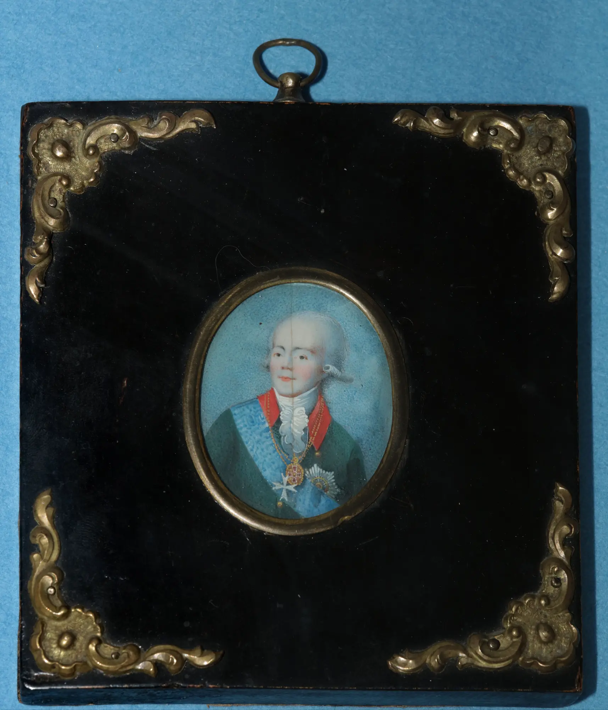

1
Портрет цесаревича Петра Алексеевича В раме Неизвестный художник.
Московская школа. 1670-е Дерево, масло, темпера. 20,0х18,0
Portrait of Tsarevich Peter Alexeyevich In frame Unknown artist.
Moscow school. 1670s Wood, oil, tempera. 20.0×18.0 cm

2
Император Павел I Неизвестный художник. Кость, акварель, гуашь. XIX век Дар
И.А. Полонского в 1978 г.
Emperor Paul I Unknown artist. Bone, watercolor, gouache. 19th century Gift
from I.A. Polonsky in 1978